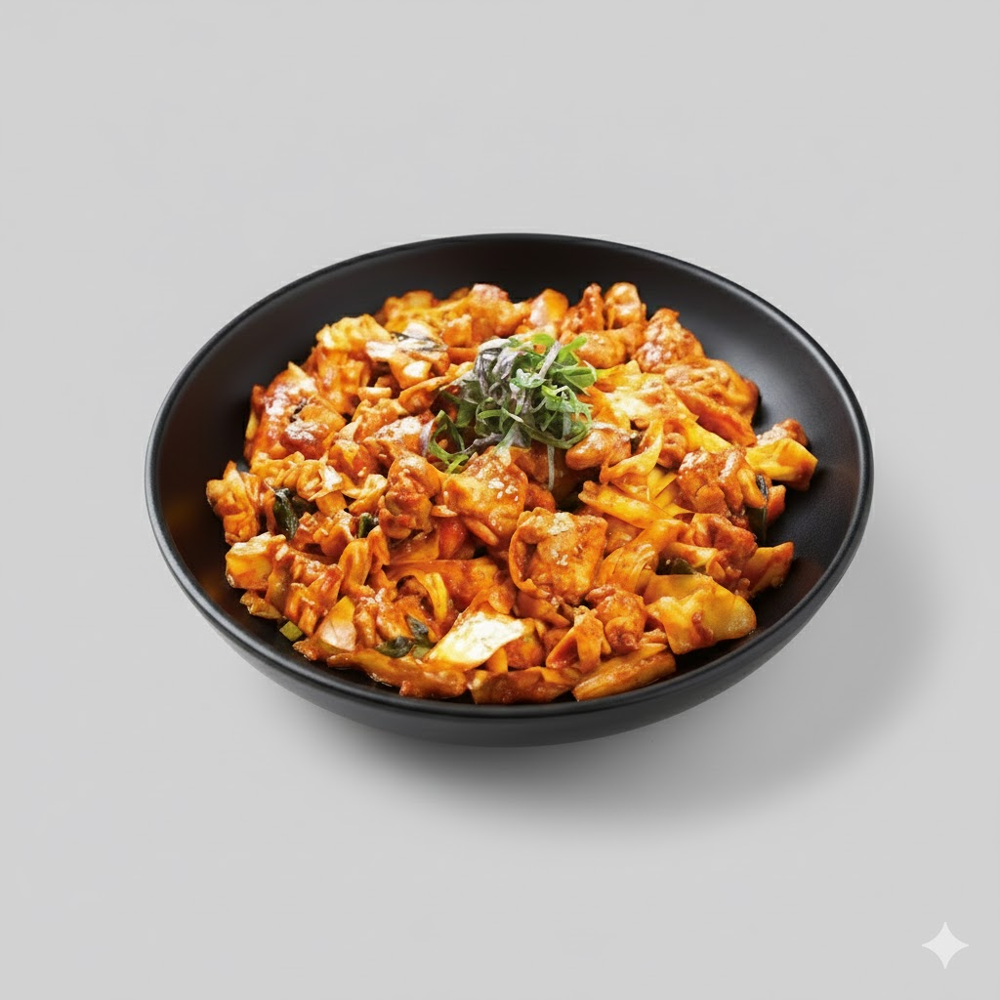

Dak-galbi
A spicy stir-fry made with chicken, cabbage, sweet potatoes, and other vegetables marinated in gochujang.
Ingredients
- 200g chicken thigh (bite-sized)
- 1 tbsp gochujang
- 1 tbsp soy sauce
- 1 tbsp sugar
- 1 tbsp garlic
- 1 tbsp gochugaru
- 1/2 cup cabbage
- 1/4 sweet potato (sliced)
- 1/2 onion
Instructions
- Mix chicken with all sauces and garlic.
- Heat the pan and add chicken.
- Add cabbage, onion, and sweet potato.
- Stir-fry until the chicken is fully cooked.
- Add a little water if needed.